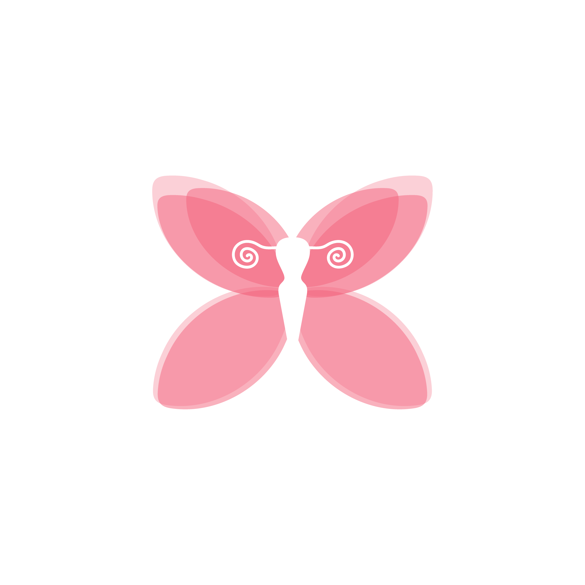

Ginecologia e Obstetrícia
Para que possamos oferecer um atendimento personalizado, responda este breve questionário antes da consulta.
* Suas respostas são enviadas de forma totalmente sigilosa.
Analisando suas respostas...
Isso leva apenas alguns segundos
Suas informações foram enviadas com segurança.Por favor, aguarde na recepção — a Dra. Vanessa irá chamá-la em breve.